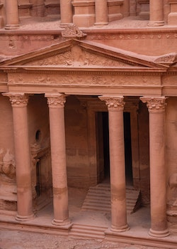
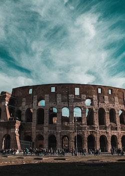
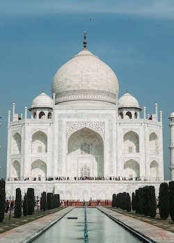

The Great Wall of China is a series of fortifications made of
stone, brick, tamped earth, wood, and other materials, generally built along
an east-to-west line across the historical northern borders of China to
protect the Chinese states and empires against the raids and invasions of
the various nomadic groups of the Eurasian Steppe.
The construction of the Great Wall began as early as the 7th century BC,
but
it was during the Ming Dynasty (1368-1644) that the most well-known sections
of the wall were built. The wall stretches for over 13,000 miles (21,000
kilometers) across China, making it the longest wall in the world.
The Great Wall is now a UNESCO World Heritage Site and a popular
tourist
destination in China. It is considered one of the Seven Wonders of the
Medieval World and is also commonly known as the
"Long Wall of Ten Thousand Li" in Chinese, which roughly translates to
" long wall of 5,000 kilometers."

Chichén Itzá is a Mayan archaeological site located on the
Yucatán Peninsula in Mexico. The site was a major center of Mayan
civilization and is famous for its stunning architecture and advanced
astronomical observations.
One of the most famous buildings at Chichén Itzá is El Castillo, also known
as the Temple of Kukulcan. El Castillo is a step pyramid that was
constructed
around the 12th century. It stands 30 meters tall and has four staircases,
each with 91 steps, leading up to a platform at the top. If you add up the
steps on all four sides of the pyramid, you get a total of 365, which is
the number of days in the Mayan calendar.
El Castillo was used for religious ceremonies, including those associated
with the Mayan calendar and astronomical observations. Twice a year, during
the spring and fall equinoxes, the sun casts a shadow on the pyramid that
creates the illusion of a serpent slithering down the staircase. This
phenomenon is known as the "equinox serpent."
El Castillo is an impressive example of Mayan engineering and is an
important
symbol of Mayan culture. It was designated as a UNESCO World
Heritage Site
in 1988 and is one of the most visited archaeological sites in Mexico.

Petra was founded in the 4th centuryBCE as the capital city
of
the Nabataean Kingdom, a trading empire that controlled important caravan
routes in the region. The city's location at the intersection of trade
routes made it a center of commerce and wealth.
The Nabataeans were skilled at manipulating water and built a
sophisticated
system of cisterns, channels, and dams to supply the city with water. This
allowed Petra to thrive in an otherwise arid region.
During the Roman Empire, Petra became a thriving city with impressive
buildings, temples, and monuments. The famous Treasury building, carved
into
the rock face, was likely a tomb or temple and is one of the most
recognizable structures in Petra.
After a major earthquake in the 4th century CE and the changing of trade
routes, Petra's importance waned, and the city was eventually abandoned
and
forgotten. It remained largely unknown to the Western world until the 19th
century when it was rediscovered by Swiss explorer Johann Ludwig
Burckhardt.
Today, Petra is a UNESCO World Heritage Site and a popular tourist
destination, attracting visitors from all over the world who come to
marvel
at its stunning rock-cut architecture and learn about its rich history.

Machu Picchu is an ancient Inca citadel located in the Andes Mountains of
Peru. Built in the 15th century, it is believed to have been used as a
royal estate or sacred religious site for the Inca rulers.
The citadel is situated on a mountain ridge above the Sacred Valley,
offering
stunning views of the surrounding landscape. It was constructed with
intricate stonework and features impressive terraces, walls, and
buildings,
including the Temple of the Sun, the Intihuatana Stone, and the Room of
the Three Windows.
Machu Picchu was abandoned by the Incas during the Spanish conquest of
the
region in the 16th century and remained hidden from the outside world
until
it was rediscovered by American archaeologist Hiram Bingham in 1911.
Since
then, it has become one of the most popular tourist destinations in the
world, attracting millions of visitors each year.
In addition to its architectural and historical significance, Machu
Picchu
is
also renowned for its natural beauty and biodiversity. The site is
located
within a protected natural area and is home to a diverse range of flora
and
fauna, including several endangered species.
Machu Picchu has been designated a UNESCO World Heritage Site and is
considered one of the most important archaeological sites in South
America.
It remains a symbol of Inca culture and history and continues to
fascinate
and inspire people from around the world.

Christ the Redeemer is a famous statue of Jesus Christ located in Rio de
Janeiro, Brazil. The statue stands at 30 meters (98 feet) tall, and its
arms
stretch out to a width of 28 meters (92 feet). It is situated on top of
Corcovado Mountain, which overlooks the city of Rio de Janeiro and is
one of Brazil's most iconic landmarks.
The statue was designed by French sculptor Paul Landowski and
constructed by
Brazilian engineer Heitor da Silva Costa, with collaboration from French
engineer Albert Caquot. Construction of the statue began in 1922 and was
completed in 1931. The statue is made of reinforced concrete and
soapstone and weighs 635 metric tons.
Christ the Redeemer has become a symbol of Christianity and Brazil, and
it is a popular tourist attraction, with over two million visitors each year.
In 2007, it was named one of the New Seven Wonders of the World, along with
the Great Wall of China, Petra in Jordan, the Colosseum in Italy, Chichen
Itza in Mexico, Machu Picchu in Peru, and the Taj Mahal in India.

The Colosseum, also known as the Flavian Amphitheatre, is an ancient oval
amphitheatre located in the center of Rome, Italy. It is considered one of
the greatest works of Roman architecture and engineering and was used for
gladiatorial contests and public spectacles, such as animal hunts and
mock
sea battles. Construction of the Colosseum began in AD 72 and was
completed
in AD 80. It is now a major tourist attraction and a symbol of Rome's
rich history and culture.
The Colosseum is an ancient amphitheater located in Rome, Italy, built
in the
first century AD for gladiatorial contests and public spectacles. It is a
popular tourist attraction and symbol of Rome's history and culture.

The Taj Mahal is a mausoleum located in Agra, India, that was
commissioned by Mughal Emperor Shah Jahan in memory of his beloved wife,
Mumtaz Mahal.
Construction of the Taj Mahal began in 1632 and was completed in 1653.
It is considered one of the greatest works of Mughal architecture and is
recognized
as a UNESCO World Heritage Site. The Taj Mahal is widely regarded as a
symbol of love and is one of India's most popular tourist attractions.